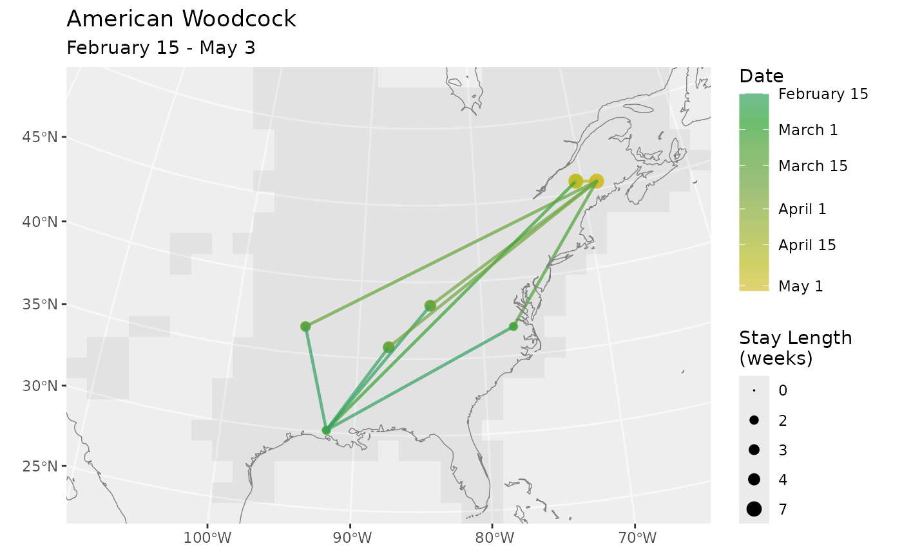

route_between() generates synthetic migration routes conditioned on
observed locations at specific times, using a Hidden Markov Model
forward-filtering-backward-sampling algorithm. Use route_between()
when you have information about where a bird or population is
at two or more points in time and want to produce routes that
pass through those locations.
Arguments
- bf
A BirdFlow object.
- n
Number of routes to sample.
- x_coord, y_coord
Parallel numeric vectors of observed x and y coordinates (in the model's CRS). Must be provided together with
date. Converted internally to indicator (one-hot) potentials. Cannot be used together withpotentials.- date
When using
x_coord/y_coord: a parallel vector of dates corresponding to each observation. When usingpotentials: a vector of dates corresponding to the columns ofpotentials(alternative to column names). Accepts any format recognized bylookup_timestep(): date strings ("2023-03-29"),Dateobjects, numeric timestep indices, or"t1"-style strings.- potentials
An
n_active(bf)xn_obsmatrix of soft observation potentials. Each column is a non-negative vector representing the observation likelihood at a given timestep. Timestep association is via column names or thedateargument (exactly one required). Cannot be used together withx_coord/y_coord.- ...
Arguments passed on to
lookup_timestep_sequenceseasona season name, season alias, or "all". See
lookup_season_timesteps()for options.startThe starting point in time specified as a timestep, character date, or date object.
endThe ending point in time as a date or timestep.
directionEither "forward" or "backward" defaults to
"forward"if not processing dates. If using date inputdirectionis optional and is only used to verify the direction implicit in the dates.season_bufferOnly used with
seasoninput.season_bufferis passed tolookup_season_timesteps()and defaults to 1; it is the number of timesteps to extend the season by at each end.n_stepsAlternative to
endThe end will ben_stepsaway fromstartindirection; and the resulting sequence will haven_steptransitions andn_steps + 1timesteps.
Value
A BirdFlowRoutes object. Same format as route().
See also
route() generates routes that rely only on the location at
the start of the route. predict_between() has the same inputs as
route_between() but returns distributions at the intermediate times
instead of sampled routes.
Examples
bf <- BirdFlowModels::amewoo
xy <- latlon_to_xy(lat = c(30.5, 45.5), lon = c(-91.5, -68.5), bf)
rts <- route_between(bf, n = 5,
x_coord = xy$x, y_coord = xy$y,
date = c("2023-02-15", "2023-05-01"))
plot_routes(rts)
